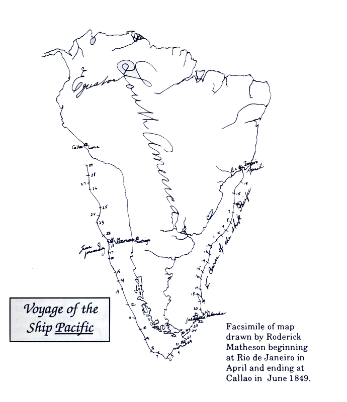
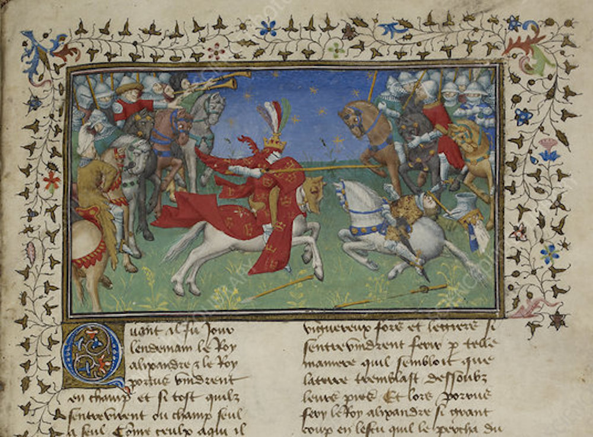
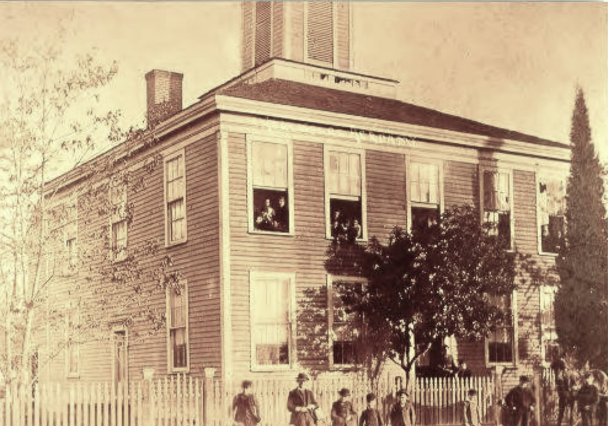
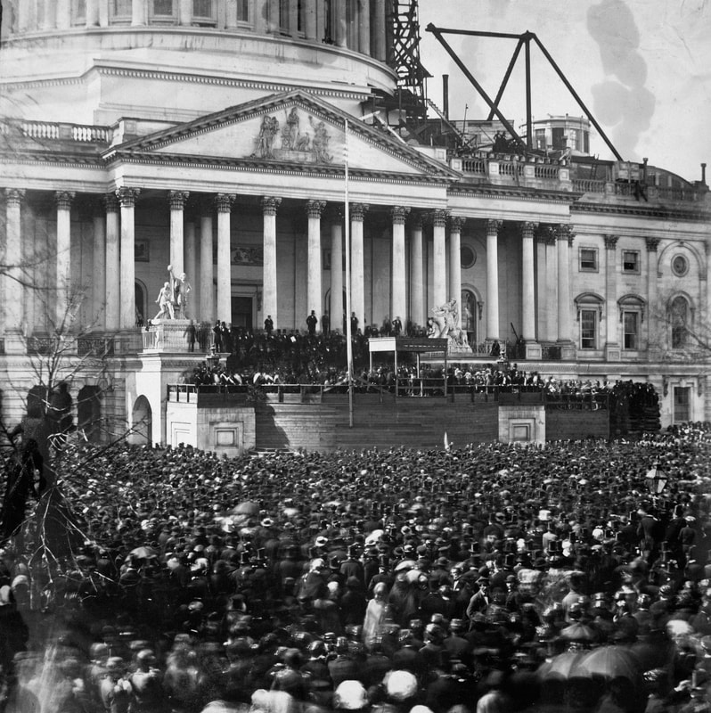

Above: View of San Francisco taken from Telegraph Hill, April 1850, by Wm. B. McMurtrie, draughtsman of the U.S. Surveying Expedition. Man standing at left looking out at San Francisco Bay; sailing ships anchored in bay; goats on hill in foreground; Montgomery Street on the right; notes on lower margin, left to right: "Clarks Point"; "Rincon Point"; "Happy Valley"; "Long Wharf (building)"; "Pacific St. Wharf (building)"; "Apollo Warehouse"; "Niantic Warehouse"; "Sansome Street"; Portsmouth Square"; and "Montgomery St."(California State Library)
Col. Roderick Nicol Matheson
City Builder and Civil War Hero
© 2020 Hannah Clayborn All Rights Reserved
 This portrait of Roderick Matheson may date to the time of his marriage, 1846, or his departure for California, 1849. (Healdsburg Museum) This portrait of Roderick Matheson may date to the time of his marriage, 1846, or his departure for California, 1849. (Healdsburg Museum)
Healdsburg has a broad street flanked by flowering cherry trees that is named for Colonel Roderick Nicol Matheson. It once led to his home. Roderick Matheson was strikingly handsome, and possessed intelligence, seemingly limitless energy, optimism, and political ambition. He was also an incurable idealist and passionate patriot, two qualities that would in the end prove fatal. Like an unerring missile, the short trajectory of his life intersected with some of the most important events in the history of California and the nation. That trajectory also brought him to the infant town of Healdsburg in the 1850's. It was here that he had his most permanent home and here that his body, finally restless no more, was buried. It is fitting that it is here he is remembered best.
Born in a Castle Roderick Matheson was born in the parish of Killearnan, Ross-shire, Scotland, May 28, 1824. Roderick’s parents, Thomas and Jean (Jane) Nicol Matheson were servants at Redcastle, Killearnan, on the Black Isle, at the time of their marriage on June 4,1819. Their first child, Elspet Cathrine, was born in 1821. In 1838 Sir William Fettes sold Redcastle to Sir William Baillie, who had William Burn remodel it in 1840. That same year the Matheson family immigrated to New York. Thomas became a businessman and Roderick, 15 years old when he arrived, finished his education in the bustling metropolis of New York. Roderick married Maria Antoinette Seaman at the Green Street Methodist Church in New York on New Year's Eve 1845. Marie Antoinette (always called Netty) was the daughter of Captain Walter Seaman and the niece of J.B. Lester, all of New York.(1) The young couple moved shortly after their marriage to Cleveland, Ohio where Roderick sold real estate. Their firstborn child, Emma, named after Netty’s older sister, died there. Returning to New York, Matheson became associated with a large importing house for a short time, and then settled in as a school teacher, a vocation he would keep to the end of his life.(2) Journey around the Horn
In early 1849 Roderick contracted Gold Fever, and became part of the first wave of adventurers to reach California via Cape Horn in 1849. He left New Jersey on board the ship Pacific on January 22, 1849. The voyage was lengthy and difficult, but Matheson's insightful, humorous, and highly descriptive letters to Netty, are a pleasure to read. She was pregnant with their second child, and living with Roderick’s mother and father in New York.(3) A near mutiny during the second month of the voyage prompted Roderick, a natural leader, to organize a group of passengers into the First Brigade of Wolverines. The Wolverines’ deck-side drills to protest the ship captain's orders seem comic as related by Matheson, the cause of the revolt being the quality of food served.(4) At one point in very real danger, the vessel was forced to dock in South America to avoid shipwreck. Matheson's letters show the frustration and anxiety of the gold seekers on this mostly monotonous, six-month voyage, with no opportunity to communicate with loved ones. His native optimism is high at the beginning, when he tells his understandably downcast wife, Dear Nett you must keep up your spirits. Look forward to the time that I shall return with a Pocket full of Rocks..(5) As the dull days plod on however, he admits, You cannot imagine the amount of anxiety I labour under here. I am not only shut off from all communication with those we hold most dear upon earth, but we are also in suspense as regards our enterprise. O! what would we not give to have just the news that the account from California was as encouraging as it was when we left New York.(6) Referring to the fastest time that mail could travel to his home in New York, Matheson glumly inquires (mostly to himself), What is the use of asking questions that take six months to answer?(7) |



Matheson sketched a map like this to mark the date as he passed or docked at each point. The Pacific landed in San Francisco on August 5, 1849. From Russian River Recorder, #36, Fall/Winter 1989.(Healdsburg Museum)
 Hundreds of ships arrived in San Francisco during the Gold Rush, and many were abandoned as crews deserted to go to the gold fields. Some of the ships, like the whaling ship Niantic, were hauled ashore and incorporated into the city's earliest waterfront neighborhoods. The Niantic, shown here in a lithograph by wandering memoirist Frank Marryat, was pressed into service as a hotel near the corner of Clay and Sansome streets. The ship/hotel was destroyed during a fire that swept much of downtown in May 1851. Hundreds of ships arrived in San Francisco during the Gold Rush, and many were abandoned as crews deserted to go to the gold fields. Some of the ships, like the whaling ship Niantic, were hauled ashore and incorporated into the city's earliest waterfront neighborhoods. The Niantic, shown here in a lithograph by wandering memoirist Frank Marryat, was pressed into service as a hotel near the corner of Clay and Sansome streets. The ship/hotel was destroyed during a fire that swept much of downtown in May 1851.
The Portable City of San Francisco
Becalmed again and again as his ship approached the harbor at San Francisco, the frustration of the voyagers was released in long, loud bursts of huzzah on August 5, 1849, as the wind finally cleared the fog and revealed that legendary golden land.(8) When Matheson finally set foot in the raucous town it was undergoing its first round of civic mitosis. He seemed bewildered: It is a little ahead of anything that I have seen yet. It is built upon a hill of sand. I say built; I should say placed, for the tenements are mostly of canvas. A slight wooden frame with canvas stretched upon it. They charge $50 for the privilege of pitching a tent in the boundaries of the city. But we have selected a very pleasant little valley with high hills on one side and the harbour in front. Tomorrow we take possession of it. We have named it Excelsior Valley.(9) Roderick and his sailing companions were at first very anxious about the theft of their belongings, but soon relaxed. I never was in a place where I have seen so much property exposed in the open. The streets are lined with goods, the wharves or landings are in the same condition. My trunks have been out ever since I have been here...there is no more fear of anyone taking anything, for every person has more than he knows what to do with. If a man wants a clean shirt, he can buy one cheaper than he can get it washed. If anyone is caught stealing, he is either shot or has his ears cut off and whipped.(10) Less than a month later Matheson marveled, Only to think that a few months ago this was a wilderness and the place where now stands the portable city of San Francisco was occupied by a few mud huts. I can scarcely believe my own eyes that I am in the same place where I landed a few weeks ago. For the City has three-fourths of it been built since I came here or perhaps I ought to say, put up; for the present City was built in the United States and China and floated around the Horn or across the Pacific. [He refers here to pre-fabricated buildings.] Talk about Aladdin's wonderful lamp, and wonder ye who have never seen a California city rush into existence...(11) Matheson lasted only a short time at the mines; his real gold lay in the infant town of San Francisco, which he adopted wholeheartedly. His native talent soon brought him prominence, and he seemed to become involved in any project that furthered the interests of the city. The associations and friendships he made in this unique port in the 1850s would be lasting ones.
Roderick Matheson asked his wife Netty to send him a picture of herself and the son he had never seen, Roderick Jr., who was born on July 27, 1849. He sent a daguerreotype of himself in return c. 1851. Netty and "Rody" would join him in San Francisco in 1852. One wintry Sunday evening, January 25, 1850, Matheson wrote home to his wife about his adopted city: Matheson was an active member of the fire department, which remained a completely volunteer organization until 1866. He helped organize the Vigilant Engine Company No. 9, in April 1852. They built a two-story brick building at 1219 Stockton Street between Broadway and Pacific, and by July had a first class, side-lever engine shipped out from New York. That was a busy summer, as he also ran against incumbent James W. Stillman for the office of City Comptroller, and was elected on November 2, 1852. He served for a year managing the finances and audits as a City Officer. He was a member of the Marion Rifles, a local militia, and in 1853 he is noted as a member of the executive committee of the Young Men’s Whig Club. During this time he lived in a house on Jackson Street, at the corner of Virginia Street.(12)
It seems Matheson could not stay away from teaching for long, and so he helped to organize the Mechanics' Institute in San Francisco, a training school, and became its president. Matheson's birthplace, Scotland, was the origin of these institutes in the 1820s, so he may have planted that seed in California. Later the Mechanics' Institute would evolve into the University of California, and the Institute kept a seat on the Board of Regents until 1974. After the easy surface (Placer) gold had been exhausted in 1853, San Francisco fell into recession with many unemployed, would-be miners crammed into its "portable" housing. The population had gone from 1,000 in 1848 to 34,766 by 1852. According to historian Taryn Edwards: On the evening of December 11, 1854, John Sime, Roderick Matheson, Benjamin Heywood, George Gluyas and a score of others assembled in the tax collector's office, at City Hall with the object of forming a Mechanics' Institute. They all shared similar dreams: boundless faith in the future of San Francisco as a port and industrial center, concern about the moral atmosphere of San Francisco, and most importantly they had an intense aversion of imported goods, which they believed kept prices high and deprived local people of jobs. Read More about the Mechanics' Institute Politics attracted Matheson like honey draws a bee. In 1854 he was appointed a General of Division of the Mexican Army, and resident Commander of Mexico in San Francisco, after spending time in Mexico working on the Gasden Purchase. As Commander he contributed greatly to better relations between the United States and Mexico. His Mexican Commission was confirmed by Juarez, then Chief Justice of Mexico, and was still in effect at the time of his death.(13) Rod Matheson's San Francisco
|


|
A Home in the Country
Perhaps tiring of increasing lawlessness and violence in San Francisco; perhaps looking for a quiet place to raise his children, Matheson moved his family to Healdsburg in 1856. That family now included his wife Netty and his son, Roderick, Jr. (born in 1849 while his father was en route to California), and brother-in-law Jesse Seaman. These three joined Roderick in San Francisco in 1852, coming around the Horn, and apparently lived with him at Washington and Leavenworth Streets in the Nob Hill section.(14) Seaman served as Matheson's clerk in the Comptroller's office and accompanied Matheson on his trip to Mexico. A daughter, Maria Antoinette was born in San Francisco in 1855. After purchasing 900 acres to the east of a settlement called Heald's Store, in 1856, Matheson and Seaman set about becoming farmers. Soon they built a lovely home, reminiscent of a Greek Revival plantation manse by the road that wound its way from the Plaza to Fitch Mountain (now 751 South Fitch Mountain Rd.) 
The House that Matheson built in 1856 at 751 South Fitch Mountain Road was a classic Greek Revival that began with weekend visits to oversee construction of the living room, so the family could occupy it, according to his granddaughter Nina Rose. By the time this photograph was taken, c. 1890, Netty Matheson had probably passed. There are at least two babies here, probably the children of Nina (Marie Antoinette) Matheson Luce, who married Jirah P. Luce in 1886. They would transform the home completely in 1904.
Tilting under the Oaks
Within a year of buying his farm, Matheson established one of the first and most interesting of Healdsburg's early festivals, the May Day celebration and jousting tournament, first held on the part of his land now known as Oak Mound Cemetery. Although a revival of this event in the 1870s drew thousands, the May Day Festival and Knighthood Tournament in 1857 was intended for the enjoyment of the town’s 100 to 200 residents. Under the gnarled arms of ancient oaks and majestic madrones, local store owners, smithies, and barkeeps donned the regalia and imagined names of medieval knights. These Knights-for-a-Day did their best to capture wooden rings with the point of a seven-foot lance while galloping at full speed. Meant to approximate the skills needed for real jousting, this sport was referred to as tilting. No May Day would be complete without a flower-bedecked Queen of course. Miss Mary Jane Mulgrew, eldest daughter of the local blacksmith, reigned as the very first Healdsburg Queen of the May in the same year that the town was christened.(15) The Healdsburg Knighthood Tournament was an outgrowth of a fascination with a mostly idealized vision of medieval chivalry and romance in Europe and the British Isles. Matheson probably read Sir Walter Scott's novels, like Ivanhoe, and identified with the Scottish aristocrats of the Waverly novels that became popular throughout the United States. Roderick would have been a teenager in 1839 when the famous Eglinton Tournament was held in Scotland about 190 miles from his home at Redcastle. Archibald Montgomerie, 13th Earl of Eglinton, nearly bankrupted his family by putting on a three-day reenactment of a medieval joust in full chivalric regalia that rivaled Woodstock in its catastrophic impact. The first two days of the tournament were rained out and no provisions for food or shelter had been planned for the 100,000 visitors. But on the third day the sun shone and the armored aristocrats staged a muddy melee that must have delighted the stalwart fans . Many distinguished visitors took part, including Prince Louis Napoleon, the future Emperor of France, so young Roderick was sure to have heard about it if he did not attend himself. Jousting tournaments became a common event in the United States, mostly in the upper classes of the South, who viewed themselves as the counterparts of European aristocrats. Matheson and two other local businessmen, William M. Macy and Ransom Powell, would later donate that same land and lay out the Oak Mound Cemetery for public use.(16)  Alexander unhorses Porrus, image from La Vraye Histoire du Bon Roy Alixandre Originally published in France; early 15th century.(British Library, science collection)
The Agricultural and Mechanical University of California
Although Matheson may have envisioned an idyllic country life and himself a gentleman farmer, Jesse Seaman probably did most of the farming. Roderick, always an intellectual, reverted to his former vocation of schoolteacher. Matheson taught in the first school built in Healdsburg, the Russian River Institute, beginning in March of 1858. He had been instrumental in building that school, having donated part of the land on which it was built in 1857. In 1859 the Institute was taken over by a group of local citizens headed by Matheson, re-opening shortly thereafter with the impressive title, The Agricultural and Mechanical University of California. Matheson not only taught in the school, but was the principal. At least some of the students paid for their education by working on the Matheson farm. Since that time the street fronting the old school has been called University Street. Matheson and the other board members had great ambitions for their school, envisioning a mechanical shop, a mill, student-worked corn and hemp fields, and botanical gardens. Matheson and another board member, Charles E. Hutton, had even secured the use of a printing press owned by local citizen, J.B. Boggs, and had gathered $400 in local subscriptions to support a newspaper to be published by the college.(17) Yet financial problems continued to thwart their ambitious endeavor. Individual board members invested more and more of their own money to keep the school in operation. Still the idealist, Matheson wrote a strong letter to the board on Sept. 7, 1860: ...All institutions of a literary and scientific character, that have any prominence in the world, unless endowed by the dying millionaire or royal bequest, have had, in their infancy to struggle for very existence; and had there been at the head of their affairs, a weak, vacillating and timid Board of Directors, they must have perished ingloriously, and have sunk into obscurity...(18)  The Russian River Institute, where Roderick Matheson taught from January 1858 until he and others took it over in 1859. They named it the Agricultural and Mechanical University of California. It is pictured here in 1868 on University Street, when it was called the Sotoyome Institute.
Called to Washington
Only four months after Matheson fired off this letter, his attention was called away to another, much brighter-lit arena. Always active in politics, Matheson had become a member of the Free Soil Party, which was intent on keeping slavery out of California and Oregon. In 1860 Matheson was elected as a delegate to the Republican National Convention in Chicago.(19) President-elect Abraham Lincoln invited Matheson to attend his inauguration in Washington D.C. because of this association in January, 1861. Following the March 4th inauguration, Matheson was one of five men summoned by Lincoln to discuss California appointments. His letters home to Healdsburg make it clear that Matheson expected to be in Washington only a few weeks. During this time he had several interviews with Lincoln, and Matheson had high hopes that he would…get a position in some lucrative office...in San Francisco.(20) Although he referred to the capitol as the dullest of all places, it is clear that he reveled in the exercise of his considerable political skills. I have been as busy as a bee in a tar bucket and happy as a clam in high water for I have had no time to think of home except for a minute at a time. My whole energies have been directed towards Polyticks.(21) As he had earlier in San Francisco, Matheson began to absorb the mood of Washington, D.C., and became embroiled in the political machine that was daily sending out ever more ominous threats of civil war. In one of his letters home he expressed the hope that appointments would be made the following day, leaving him free to return to his family. Yes, home where my Netty awaits me, where my dear children are looking for their Pa, where my hopes, expectations, desires, and future happiness all center...(22) Matheson had fathered two more children in Healdsburg, but only one survived infancy. This was Baby George born in 1860, not long before Matheson left for Washington. It became obvious to Matheson that political appointments would be delayed, although he remained optimistic, stating, perhaps to placate Netty, I expect to make a handsome thing out of my employment in public business.(23)  The inauguration of President Abraham Lincoln, March 4, 1860. Roderick Matheson was there at the invitation of Lincoln, to represent the Free Soil Party. Note the Capitol Building under construction. (Library of Congress)
Civil War Colonel
In April 1861 there is a sudden break in Matheson's correspondence home. Instead of making the long-anticipated appointments in April, President Lincoln, with war imminent, asked for 75,000 loyal state militiamen to serve for three months. According to the author of an anonymous letter to the editor in 1873, a person who had extensive and detailed knowledge of Healdsburg residents and events: …Mr. Matheson went East in 1861 to witness the inauguration of President Lincoln. While there he received an appointment in the Custom House at San Francisco, and had his baggage on board a steamer to return to this State, when the war of the Rebellion having broken out, he was offered the command of the First California Regiment, 32d New York, Volunteers, which he accepted, and went at once into active service. However it transpired, Matheson was irretrievably swept into the whirlwind of passions and politics of the mounting national crisis. He immediately volunteered—or was offered a commission—and was soon elected Colonel of the 32nd New York State Volunteer Infantry, organized on Staten Island on 31 May 1861. Because many of its members had a California connection, Matheson and others commonly referred to this regiment as the First California Regiment. Matheson led this regiment in the first major battle between the states, the Battle of Bull Run (now known as the First Battle of Bull Run). His troops had the responsibility of protecting the rear of the Union Army near Centerville, Virginia, about seven miles from the main engagement at Bull Run. For his actions he won a commendation from President Lincoln himself, and achieved the only Union victory of the day in that skirmish.(24) In one letter home Matheson displays his frame of mind and makes one of many arguments to his wife, justifying his abandonment of his family and military enlistment: I am back from battle with my reputation for a good soldier being established. I am held in high estimation by my men and officers, by all the Regt. around. Netty, my love, what would I do or give if you were by my side, that I could look into your face and get your approving smile for trying to fight and sustain YOUR country and now mine. Do you not think I may, by and by, rank as an American?…(25) In another letter from Alexandria, Virginia: Have I said too much? Out of the heart the mouth must speak or the heart breaks. O my Netty, my darling, you know not how miserable your poor husband is, in this far off country of contention, discord, and strife. this is not the land I left 12 years ago everything is changed but such a change not, by any means, for the better but the worse. Your once boasted country is falling to pieces and destruction. The land of my children is imperiled, her liberties are about to be subverted. My country by every tie that can be held holy, sacred and assumed is assailed. Would you as a woman, an American proud of your revolutionary descent, have the man of your choice prove himself unworthy of your alliance, prove reticent to duty, a coward! No, I think I know my Netty better.(26)
A Model Soldier: Colonel Roderick Matheson posed for these photographs, one in formal dress, the other casual, soon after he was commissioned, in the late spring or summer of 1861.
The First Battle of Bull Run |


First Battle of Bull Run
Chromolithograph by Kurz & Allison, 1889 (Library of Congress)
 This is probably the "camio" (cameo) that Matheson writes of sending to Netty in the summer of 1862. (Healdsburg Museum) This is probably the "camio" (cameo) that Matheson writes of sending to Netty in the summer of 1862. (Healdsburg Museum)
As the war continued the First California Regiment, now about 1,000 men led by Colonel Matheson, engaged in one bloody battle after another, often disheartened by defeat and lack of supplies. After defending Washington D.C. until March, 1862, Matheson's regiment headed south with the Union Army towards Richmond, Virginia, the capitol of the Confederacy. Matheson's regiment fought in most of the actions preceding the assault on Richmond and covered the retreat of the Union Army back to Centerville. Much of this fighting took place in insect infested, disease-ridden swampy areas.
It becomes clear from Matheson's correspondence that Netty was unhappy in Healdsburg. She was deeply troubled about falling into poverty, and desperately wanted Matheson to resign his commission and reunite with her. Her family’s Quaker background might have dampened any enthusiasm she might have for war. Plans were even underway to sell the Healdsburg farm and have Netty join Roderick in New York. Although he agrees with her decision to abandon the place, he retains an evident fondness for it, recalling, …the debating society May Day festivals Military Companies Specimen hunting Political excitement all the things that went to make our Patmos or exile in the Country tolerable.(27) Patmos was the Greek Island of exile where John the Evangelist wrote the Book of Revelations—Matheson was nothing if not classically educated! Later he says of their farm in Healdsburg: ...it is a pretty place it is a Sensible place it is all that a man or woman could wish for yet to you or me or our family it is of no use... In April, 1862, he assures her that as soon as the Union forces take possession of Richmond, and victory is assured, he will resign.(28) In July 1862, Colonel Matheson and his troops had time for a short rest. It was at this point that Matheson had hopes of becoming a general, an appointment for which he was well qualified, and one that might have stationed him on the Pacific Coast, nearer to his family. His dream was to make his wife and children, and perhaps the whole nation, proud of him. By serving his country he had won the right to send his son, Rody, to West Point, a thing that would have, ...paid me for all I have born.(29) |

The Battle of Gaines Mill, on July 27, 1862 was a tactical defeat for the Union Army. After fighting off successive waves of Confederate troops all day, Union troops were forced back across the Chickahominy River under cover of darkness, burning their bridges behind them.
|
Romantic Warrior  Profile photograph attached to Col. Matheson's military file, taken either at enlistment, or post mortem. (courtesy of Massachusetts Commandery of MOLLUS) Profile photograph attached to Col. Matheson's military file, taken either at enlistment, or post mortem. (courtesy of Massachusetts Commandery of MOLLUS)
The Long Road Home
From September 2 to September 14, 1862, the Union forces engaged in a series of skirmishes, one of which stormed a Confederate stronghold at Crampton's Gap on South Mountain. As Matheson led his regiment on an assault up the mountain, a miniball struck his right thigh. He was evacuated to a field hospital at Burkittsville, Maryland. A later investigation stated that ...the wound was not considered serious, the leg was not amputated, and Colonel Matheson did not himself, nor did his friends apprehend any danger. Yet on October 1st Colonel Matheson began to bleed severely. He died the next day at the age of 36. Matheson's Corp Commander, General W.B. Franklin wrote that the Union lost one of its best Colonels, and a great deal of fuss was raised about how and why he was allowed to bleed to death in an army hospital. Matheson's body was taken to New York City, where it lay in state in the Governor's room at City Hall until Oct. 9th. On that date an imposing military funeral was held at the Green Street Methodist Church in New York, where he and Netty had been married 16 years before. Many notable men served as pallbearers including Generals John C. Fremont (then a U.S. Senator from California) and John S. Ellis; and C.K. Garrison, who had been Mayor of San Francisco in 1853. California's senior senator and Rod's old friend from his days in San Francisco, Alexander McDougall, presided over the services. Meanwhile back in San Francisco, an appeal was published, naming Col. Matheson as California’s first casualty in the war, and asking for donations to the Matheson family, who was described as destitute and with a mortgage of $5,000 on the family’s 300-acre farm, at that time in foreclosure.(30) The Daily Alta California also published a letter from Healdsburg on October 29, 1862, stating: I presume it is not generally known that the only property left in this State by the lamented and gallant Col.Roderick Matheson is mortgaged for the sum of $4,000 or upwards, and that proceedings to foreclose such mortgage were some time since commenced. The widow, with three young children, are yet residing on the property, perfectly destitute, except so far as their wants are relieved by the charity of neighbors. It cannot be possible that the loyal people of this State will allow the family of this gallant officer, who fell in defence of his country, to suffer for the want of a home or the necessaries of life, and I therefore ask you to make known their condition through your columns.(31) Later Col. Matheson’s body was transported on the ship Sonora across the Isthmus of Panama, arriving in San Francisco on November 6. Here it was met by the First California Guard. The Healdsburg brass band led a torchlight procession into San Francisco, playing a slow and solemn funeral dirge. Matheson's body lay in state in Platt's Hall and another funeral was held. Once again, many notables attended including then Governor of California, Leland Stanford, and the founder of the Bank of California, William Ralston, and a representative of the Mexican government, Jose Marcos Margareutta. Finally, what remained on earth of Colonel Roderick Nicol Matheson was put aboard the steamer Petaluma, to be met in the city of that name by an elegant hearse, drawn by four white horses dressed in mourning, and was again accompanied by his home town brass band, and a military escort consisting of a delegation each from the National Guard, San Francisco, the Petaluma Guard, the Emmet Rifles, the Santa Rosa Military Company, and the Sotoyome Guard of Healdsburg, of which Matheson had been a member. At last this frail form, minus the ambitious, idealistic spirit that once animated it, was taken by the white horses to Healdsburg and put to final rest at Oak Mound Cemetery on November 9, 1862.(32) Summary of Col. Roderick Matheson's Role in the Civil War |
|
Epilogue
It is unknown if or how much the Matheson family received in private charitable donations to forestall foreclosure of their 300-acre farm. At the 14th Session of the California State Assembly in January 1863, it proposed to appoint Col. Matheson’s 68 year-old father, Thomas, to the position of House fireman, with the pay of $5.00 a day. Thomas and Jane had come to live with Roderick and Netty in Healdsburg sometime in the late 1850s, but it is not known how long they remained. That proposal was later shelved in favor of new relief resolution 479, that went on file in April 1863. Thomas served as a Porter for the Journal Clerks' room of the California State Assembly in April 1863.(33) The Assembly made a proclamation in January, 1863, which included the following: …we have been pained to hear of the.death of the gallant Colonel Roderick Matheson, one of the first to unsheathe his sword in defence of the cause in which all our hearts best sympathies are enlisted, and who from his first brilliant action on the j bloody field of Manassas to the day when he fell heading the forlorn hope in the battle of South Mountain, ever made that sword a rallying point for his country’s defenders and a flaming brand of destruction to her foes. Resolved, That in the death of Colonel Matheson California has lost one of her noblest sons, whose name will long he remembered as a synonym for all those gallant qualities which insure to their possessor everlasting fame.(34) In April 1863 the California State Assembly passed Resolution 479, an act for the relief of the Matheson Family. The discussions were as follows. …Mr. McNabb thought this an appropriate time to move to take up Assembly Bill No. 479— An Act for the relief of the family of the late Colonel Roderick Matheson [$5,000] On motion, it was taken up. Mr. Crane opposed the bill as bad in precedent. Mr. Nixon advocated it on patriotic grounds. Mr. McNacb said the estate of the deceased was worth $6,000, and mortgaged to the amount of $4,800. The widow was getting thirty dollars a month from the Government, which was inadequate for the education of the children. When the war broke out Colonel Matheson immediately mortgaged his property for something near $4,000, and about $3,000 of it was spent in raising and equipping the First California Regiment — of which every Californian has reason to be proud. The bill was read a third time and passed.(35) By 1865 Colonel Matheson’s old friends had not forgotten him. W.C. Ralston was in charge of a committee in San Francisco to pay for and erect a monument over his grave at Oak Mound Cemetery.(36) In December 1865 the California State Assembly took up a proposal to offer Col. Matheson’s 16 year old son, Rody, a position as their Assistant Paper Folder. The proposal was voted down, however, 21 to 36. Those who voted against stated that they preferred direct aid. When his supporters tried to appoint him a page, Rody himself deferred to another young man who needed the money for his education.(37) Roderick Matheson, Jr. (Rody), the son that Colonel Matheson so wanted to attend West Point, never made it to that academy, and it might have changed his life if he had received that job as an Assistant Paper Folder or Page. Continuing to labor in agriculture, he died after a terrible threshing machine accident at Davisville near Sacramento on July 27, 1870, about five years later. As his father’s death was charged to neglect at the army field hospital, Rody’s death was also blamed on lack of medical attention. He left a young widow, but no children.(38) Col. Matheson’s wife Netty, as previously mentioned, was awarded a widow's pension and lived the rest of her life on the Healdsburg farm, which was saved from foreclosure by resolution of the State Assembly. By 1880 she was living with her children Nina (Maria Antoinette) and George, and her brother and sister, Jesse and Emma Seaman. One source says Jesse was her cousin. Netty died in Healdsburg on February 28, 1887. George, Roderick Matheson’s youngest son, born just before he left for Washington D.C., was only 26 when he died November 9, 1887, from injuries sustained when his carriage overturned on his way home.(39) Netty, who died earlier that year, was spared the sorrow of seeing the life of a third young Matheson snuffed out. Marie Antoinette (1855–1920), always known as Nina, Roderick Matheson's only surviving daughter, lived in Healdsburg all her life, marrying a prominent local rancher's son, Jirah P. Luce, Jr. (1843–1921) in 1886. They had two children Nina Luce Rose (1888–1986) who married Guy Rose; and Jirah E. Luce (1890–1977), who married Margaret Z. Grove in 1926. Roderick Matheson's granddaughter, Nina Luce Rose, lived in Healdsburg all of her life, and his great-granddaughter, Nina M. Von Tillow (1916–1994), lived in Healdsburg until just before her death. Maria Antoinette Seaman Matheson’s cousin (or possibly brother) Jesse Seaman, who accompanied her when she came to California in 1852, lived a long life in Healdsburg. Born in 1831, he helped Roderick Matheson in San Francisco in the Comptroller’s office, accompanied him to Mexico in the 1850s, and purchased land and farmed with him in Healdsburg. He died at age 85 on February 19, 1916. Roderick Nicol Matheson had only one sibling, an older sister, Elspet Cathrine Matheson, born May 5, 1821, in Killearnan, Ross and Cromarty, Scotland. By 1860 she was living in Portland, Oregon, and married to William Patterson, a painter by trade, born in Scotland in 1812. They may have been peripatetic, or a blended family. Three of their children carried Matheson family names (Jane 15, Elspet 11, and Ellen 7) and were born in New York. Two others, William T. 17, and Mary 13, were born in Louisiana and Georgia respectively. Young William T. Patterson apparently got counted twice that year, because he also appears in the Matheson household in Healdsburg in 1860. By 1880 William and Elspet Patterson were living with their daughter Elspet, and show no occupation. The younger Elspet was then married to an accountant named Georg H. Andrews. William Patterson died by 1886, when Elspet Matheson Patterson appears as a widow boarding in various Portland locations until I lose track of her in 1906.(40) Col. Roderick Matheson’s Civil War sword and a painting of the First Battle of Bull Run were passed down to Jirah E. Luce, who donated these and other items to the Healdsburg Museum. Other family members also donated artifacts and documents including lovely, tiny dresses worn by Netty in the 1850s and 60s, with bell sleeves and voluminous hoop skirts. Matheson’s invaluable letters were also donated to the Healdsburg Museum.(41) The Matheson home at 751 South Fitch Mountain Road, an extension of Matheson Street, was enlarged and remodeled by Nina Matheson Luce and her husband Jirah in 1904. It went through another transformation when it was purchased by bank president George Warfield and his designer wife, Genevieve, in 1920. The home has been restored since that time, but has essentially retained its 1920 exterior. ENDNOTES
1. Most information in this article can be found in the sources listed in the first section below. Some of the older sources, including my own works, contain errors in dates and other details, as often occurs when errors are copied. The second section contains additional or new sources. Samuel Cassiday, An Illustrated History of Sonoma County, California, Lewis Publishing Co: Chicago, 1889. (This source contains an incorrect birth, marriage and other incorrect dates), 346-347. Frances D. Davis, Colonel Roderick Matheson: A True American, unpublished report, 1969 (Healdsburg Museum Archives). Hannah Clayborn, "Colonel Roderick N. Matheson: Civil War Hero from Healdsburg", in Russian River Recorder, July/Aug. 1981, Issue 21, 5-8. Charles M. Otstot, "Roderick Matheson: California Pioneer and Civil War Hero", manuscript copy, (Healdsburg Museum Archives). Charles Mathieson Otstot, "The Civil War Letters of Colonel Roderick N. Matheson, March 1861 - August 1862", unpublished manuscript (Healdsburg Museum Archives). An edited version of Colonel Matheson's letters from 1849 to 1853 appeared in the Russian River Recorder, Issues, 35-38, 40, Spring, 1989 through Summer 1991. Maria Antoinette Seaman, born in 1831, was the daughter of Capt. Walter Seaman (deceased at time of her marriage), and the niece of J.B Lester, all of New York.(Newspapers.com via Ancestry.com, New York Tribune Marriage Notice 12 Jan 1846 Note: Roderick’s name misspelled "Matherson".). Maria Antoinette Seaman in the New York City, Compiled Marriage Index, 1600s-1800; Marriage ID: 2220313701, The New York Genealogical and Biographical Record (quarterly), 1932. on microfilm at Family History Library, Salt Lake City, Utah. Thomas Matheson: In 1838 Redcastle was sold by Sir William Fettes to Sir William Baillie, who had William Burn remodel it in 1840, the same year the Matheson family immigrated to New York: https://www.wikitree.com/wiki/Matheson-1434 Some sources state that Marie Antoinette Seaman's father is Obadiah Seaman (60 years); 1850 Census, Place: Putnam Valley, Putnam, New York; Roll: 581; Page: 45A. Thomas Matheson: ancestry.com, Thompson Family Tree. Obadiah Seaman and Mary Fowler appear to be the parents of Jesse Fowler Seaman, Antoinette's bachelor brother or cousin, who joined them in California. 2. An Illustrated History of Sonoma County, California, Lewis Publishing Co: Chicago, 1889. pp. 346-347. 3. The census records spell the family name Mattison, and give Maria A.’s age erroneously as 64 (she would be about 19 or 20). But it does record her 10 month-old son as "Roger." Year: 1850; Census Place: New York Ward 8, New York, New York; Roll: 542; Page: 329A. 4. Matheson Letter 26 Feb. 1849. 5. Matheson Letter 22 Jan. 1849. 6. Matheson Letter 28 Feb. 1849. 7. Matheson Letters 11 Nov. 1849 . 8. Matheson Letter 4 Aug. 1849. Date of arrival at San Francisco: https://www.maritimeheritage.org/passengers/pc080549.html 9. Matheson Letter 5 Aug. 1849. There is an Excelsior District in San Francisco, that has an official mapping date of 1869. However, this could be all or part of the area of the southern part of San Francisco (not to be confused with South San Francisco) that was Matheson’s first campsite. 10. Ibid. 11. Matheson Letter 17 Sept. 1849. 12. Our San Francisco Correspondence, Sacramento Daily Union, Volume 5, Number 648, 21 April 1853. Vigilance Company No. 9 at: https://www.guardiansofthecity.org/sffd/history/index.html. San Francisco City Directory 1852-53, Parker, James M: Matheson R. city comptroller, h Jackson, cor Virginia; also listed under City Officers, pp. 108; 162. Matheson as City Comptroller: runs for election against James W. Stillman, Daily Alta California, Volume 3, Number 303, 2 November 1852.is elected: Daily Alta California, Volume 3, Number 286, 16 October 1852. Daily Alta California, Volume 3, Number 300, 30 October 1852. 13. Samuel Cassiday, An Illustrated History of Sonoma County, The Lewis Publishing Company, 1889, pp. 346, 347. Demographics of San Francisco, 14. An Illustrated History of Sonoma County, California, The Lewis Publishing Company 1889. 1850 Census Records, San Francisco. Obituary of Jesse Seaman, Healdsburg Tribune, Enterprise and Scimitar, Volume XXVIII, Number 46, 24 February 1916. (This is the only source that states that Jesse Seaman is Netty’s cousin.). 15. W.A. Maxwell, "Early Healdsburg Memories" in Tribune 2 April, 1908, 1:3). "J.S. Williams Writes Reminiscently" in Enterprise, 14 Feb. 1914. 16. The early May Day festival and jousting tournament was held on Matheson's land from about 1857 through 1860, exactly the years Matheson was in Healdsburg. It is therefore assumed that he was a founder, or at least major organizer of the event. He also refers to it fondly in his letters home during the war. W.A. Maxwell, "Early Healdsburg Memories" in Tribune 2 April 1908 (1:3). "J.S. Williams Writes Reminiscently" in the Enterprise 14 Feb 1914. The Eglinton Tournament 1839: https://en.wikipedia.org/wiki/Eglinton_Tournament_of_1839. https://www.youtube.com/watch?v=rqRTFDDNMUU. 17. Minutes of the Meeting s of the Board of Directors of the Agricultural and Mechanical University of California, 12 May, 1859 to 1 Sept., 1860. , Warren Ferrier, Ninety Years of Education in California 1846-1936 (Berkeley: Sother Gate Book Shop, cr. 1937) 134, 135. Langhart, Edwin, "Russian River Institute" in the Russian River Recorder, Jan. 1977. 18. Ibid., Sept. 7, 1860. 19. By Magnetic Telegraph, Republican State Convention, Daily Alta California, Volume 12, Number 53, 23 February 1860. Visalia Weekly Delta, Volume 1, Number 38, 10 March 1860. 20. Matheson Letter 8 Mar 1861. 21. Matheson Letters, 8 Mar 1861 and 29 Mar 1861, 22. Matheson Letter 31 Mar 1861. 23. Matheson Letter 22 April 1861. 24. Quote: Reminiscenses—Healdsburg in 1857, Russian River Flag, Volume V, Number 18, 13 March 1873 (3:3). Matheson Letter 24 July 1861. 25. Matheson Letter 24 July 1861 (portion dated 3 Aug. 1861. 26. Matheson letter from Alexandria, Virginia, 11 October 1861. 27. Matheson Letter 27 Oct. 1861. 28. Matheson Letter 13 April 1862. 29. Matheson Letter 21 June 1862. 30. Sacramento Daily Union, Volume 24, Number 3631, 10 November 1862. 31. Daily Alta California, Volume XIV, Number 4633, 29 October 1862. Daily Alta California, Volume XIV, Number 4632, 28 October 1862. 32. Daily Alta California 8 November 1862. Funeral of Colonel Matheson, Daily Alta California, Volume XIV, Number 4644, 9 November 1862. The Remains of Colonel Matheson, Sonoma Democrat, Volume VI, Number 5, 13 November 1862. 33. 1860 Census, Mendocino, Sonoma, California; Page: 466; Family History Library Film: 803069. Thomas (65) and Jane, (73) are living with the Matheson family, along with William Patterson (16) and Mary Brady (23), who may be students or servants. Sacramento Daily Union, Volume 25, Number 3774, 27 April 1863. 34. Sacramento Daily Union, Volume 24, Number 3681, 8 January 1863 Sonoma Democrat, Volume VI, Number 13, 10 January 1863. Sacramento Daily Union, Volume 25, Number 3756, 6 April 1863. 35. Sacramento Daily Union, Volume 25, Number 3761, 11 April 1863. Bills Approved, Sacramento Daily Union, Volume 25, Number 3763, 14 April 1863. Text of Resolution 479, Relief to Mathesons, Sacramento Daily Union, Volume 25, Number 3780, 4 May 1863. 36. Monument to Colonel Matheson, Sonoma Democrat, Volume VIII, Number 24, 25 March 1865. Monument to Colonel Matheson, Daily Alta California, Volume 17, Number 5486, 14 March 1865. 37. Assistant Paper Folder, Sacramento Daily Union, Volume 30, Number 4592, 9 December 1865. Sacramento Daily Union, Volume 30, Number 4594, 12 December 1865. 38. Roderick Matheson, Russian River Flag, Volume II, Number 38, 4 August 1870. 39. An Illustrated History of Sonoma County, California. The Lewis Publishing Company 1889, p 347. Accidents, Daily Alta California, Volume 42, Number 13950, 10 November 1887. 40. Birth records for Elspet Cathrine Matheson cited in footnote 1. Elspet C. Patterson: 1860; Census Place: Portland, Multnomah, Oregon; Page: 492; Family History Library Film: 805056. 1880; Census Place: Portland, Multnomah, Oregon; Roll: 1083; Page: 329B; Enumeration District: 099. Portland, Oregon City Directories 1886–-1906. findagrave.com lists an Elizabeth Patterson, with no other information but Mar. 1910, buried in Lone Fir Pioneer Cemetery, Portland, Oregon. 41.. Healdsburg Tribune, Enterprise and Scimitar, Volume XXVIII, Number 46, 24 February 1916. ancestry.com and findagrave.com Social Security Administration; Washington D.C., USA; Social Security Death Index, Master File Nina M. Vontillow. Sword and First Bull Run painting: Communication from Fay and Gary Smith, Healdsburg, 16 April 1995. |